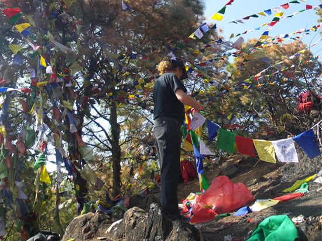
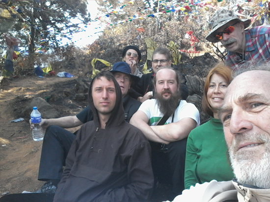
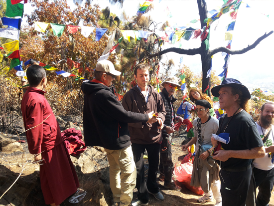
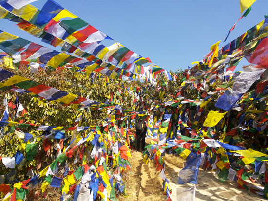

  <center>
      <div id="mainContent">
        <!--
        <h2>Lungta donations are closed for this year. </h2>
        <h2>Thank you for your support and Happy Losar!</h2>
        -->

        <div class="row">
          <div style="width:33%;float:left;">
            
          </div>
          <div style="width:33%;float:left;">
            
          </div>
          <div style="width:33%;float:left;">
            
          </div>
          <div style="width:33%;float:left;">
            
          </div>
          <div style="width:33%;float:left;">
            
          </div>

          <div style="clear:both;"></div>
        </div>

<div style="margin:0 auto;max-width:650px;text-align:justify;font-size:18px;line-height:30px;" class="">
  <br><br>

  <br>
Dear Friends,
<p>We successfully hung 12,500 flags in the holy place of Parping on the morning of February 12th, on the third day of the Fire Monkey Year.
<br>We were fortunate in that H.H Dudjom Rinpoche Sangay Pema Shepa was present in Parping and empowered our flags.
</p>
<p>Thank you all for your participation and all good wishes for a happy and prosperous Fire Monkey Year!</p>
<p>Shang Shung UK team</p>
<br><br>

  <br>
Cari amici,
<p>Abbiamo appeso 12,500 bandierine nel luogo sacro di Parping, la mattina del 12 febbraio, il terzo giorno dell' anno di Scimmia di Fuoco.
<br>Abbiamo anche avuto la fortuna di fare potenziare le bandierine a S.S Dudjom Rinpoche Sangay Pema Shepa che era presente a Parping.
</p>
<p>Grazie per la vostra partecipazione. Tanti auguri per un felice e prosperoso anno della Scimmia di Fuoco.</p>
<p>Shang Shung del Regno Unito</p>
<br><br>

  <br>
亲爱的朋友们，
<p>我们在火猴新年的第三天，2月12日上午在尼泊尔琶尔平的各处圣地圆满成功地挂了12500风马旗。
<br>很侥幸的，敦珠仁波切桑盖配玛当时在场，为我们加持了我们的风马旗。
</p>
<p>谢谢大家的参与和一切美好的祝福。愿大家过个幸福和兴隆的火猴新年 ！</p>
<p>英国象松团队奉告</p>
<br><br>

  <br>
Queridos amigos,
<p>Hemos colgado con éxito 12.500 banderas en el lugar sagrado de Parping en la mañana del 12 de febrero, en el tercer día del Año del Mono de Fuego.
<br>Tenemos la suerte de que S.S. Dudjom Rinpoche Sangay Pema Shepa estaba presente en Parping y empoderó nuestras banderas.
</p>
<p>Gracias a todos por su participación y todos los buenos deseos para un feliz y próspero Año del Mono de Fuego!
</p>
<p>Equipo de Shang Shung RU</p>
<br><br>


  <br>
Дорогие друзья!
<p>Мы успешно развесили 12,500 флажков в святом месте Парпинге утром 12 февраля в третий день года огненной обезьяны.
<br>Нам повезло, что Е.С. Дуджом Ринпоче Сандже Пэма Шепа был там и освятил наши флажки.
</p>
<p>Спасибо всем за участие, желаем счастья и процветания в год огненной обезьяны!</p>
<p>Команда Шанг Шунга из ВБ</p>
<br><br>
</div>

    </div>
  </center>
